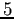

Se pueden identificar tres diferentes tipos de imágenes utilizadas por el método y que denominamos: patrón, objetivo y objeto de realidad aumentada. Cabe aclarar que el objeto de RA puede ser obtenido de una imagen 2D, una vista de un modelo 3D, etc.
- Imagen patrón: es la imagen usada como patrón que se pretende detectar y seguir en cada fotograma del flujo de video. Luego, en su lugar se superpone el objeto de realidad aumentada.
La adquisición de la imagen patrón cumple con ciertas restricciones prácticas:
- el tamaño de la imagen debe ser de
 pÃxeles,
pÃxeles,
- las condiciones de iluminación deben ser adecuadas para detectar caracterÃsticas,
- la imagen debe ser rica en detalles, es decir que debe poseer bordes o caracterÃsticas identificables y
- el plano de la imagen debe estar aproximadamente perpendicular al lente de la cámara al momento de la captura.
- Imagen objetivo: es un fotograma del flujo de video, adquirido con la cámara web en tiempo real. Sobre este fotograma es donde se detecta la imagen patrón. Para esta imagen también se establecen algunas restricciones prácticas:
- el frame capturado con la cámara web posee un tamaño de
pÃxeles,
- las condiciones de iluminación deben ser adecuadas para detectar caracterÃsticas y
- la imagen debe ser rica en detalles.
- Objeto de realidad aumentada: es la definición de una imagen (ej: foto, tapa de libro, revista, texto etc.) que es superpuesta en el flujo de video.
La captura de la imagen patrón y la imagen objetivo, fue realizada con una cámara web con una resolución de
pÃxeles de una computadora portátil Toshiba Satellite A505-S69803.
Para las pruebas se ha utilizado como imagen patrón la tapa de una revista de
También, se han propuesto tres condiciones de iluminación diferentes para evaluar mejoras orientadas a la robustez del método y que denominamos:
- Iluminación normal : se simuló un ambiente con iluminación adecuado para la lectura. La habitación consta de: dos ventanas tras cortinas semitraslucidas ubicadas a metros () de la cámara web, iluminación mediante una lámpara de bajo consumo de 18 W. (equivalente a 90 W. de una lámpara incandescente) situada en el techo de la habitación a metros () de la escena y a metros () por detrás del objeto a detectar. Éste último, se situó a una distancia de metros () de la cámara web (en la práctica esta distancia puede variarse entre y metros aproximadamente). Un esquema de las distancias descriptas puede observarse en la Fig. 4.1, donde las proporciones de las lÃneas que identifican las cotas respecto a la medidas reales no han sido tenidas en cuenta, ya que sólo fue pensado para esquematizar las distancias en el entorno de pruebas. Para esta escena de iluminación, la lámpara direccional no está encendida.
- Iluminación alta : la imagen se capturó en la misma situación que la iluminación normal, con la diferencia que se estableció una iluminación direccional a través de una lámpara incandescente de 60 W., que apunte directamente a la escena situada frente a la cámara, como se observa en el esquema de la Fig. 4.1.
- Iluminación baja : la imagen se capturó en la misma habitación que las pruebas anteriores, pero tanto la lámpara de bajo consumo como la lámpara direccional están apagadas. Para dar una idea más acabada de la condición de iluminación, se puede pensar en una escena en la que se dificulta la lectura normal de un documento.
Figura 4.1:
Esquema del ambiente en el que se realizaron las pruebas.
|
|
christian
2014-01-31